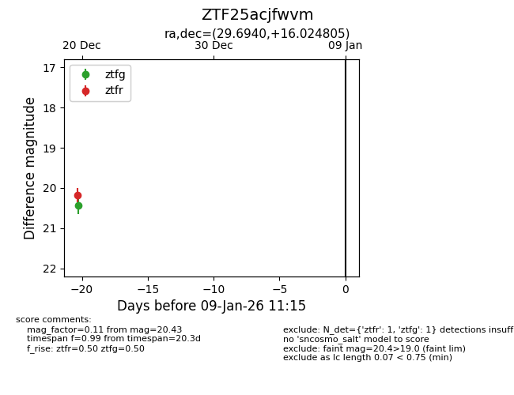
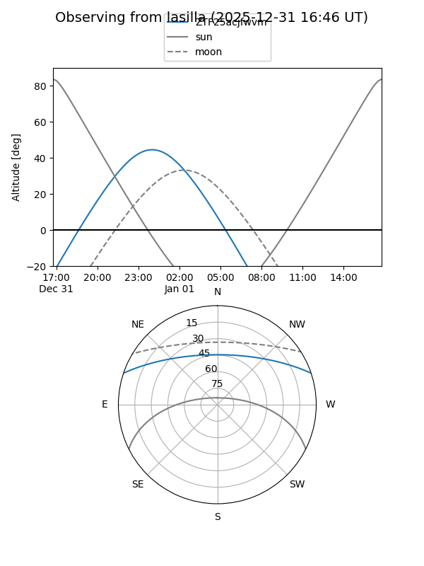
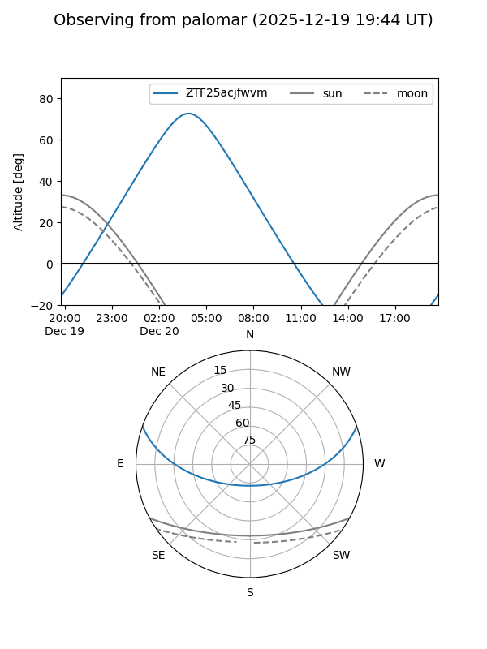

ZTF25acjfwvm
Target ZTF25acjfwvm at 2025-12-22 14:03
Aliases and brokers:
FINK: fink-portal.org/ZTF25acjfwvm
Lasair: lasair-ztf.lsst.ac.uk/objects/ZTF25acjfwvm
ALeRCE: alerce.online/object/ZTF25acjfwvm
alt names
ZTF25acjfwvm (ztf,fink_ztf)
Coordinates:
equatorial (ra, dec) = 29.6940,+16.02481
equatorial (HMS+DMS) = 01:58:46.56,+16:01:29.30
galactic (l, b) = (145.6399,-43.85781)
Flags:
Photometry:
last ztfg=20.43, ztfr=20.18
1 ztfg, 1 ztfr detections
Lightcurve

Visibility


Additional plots